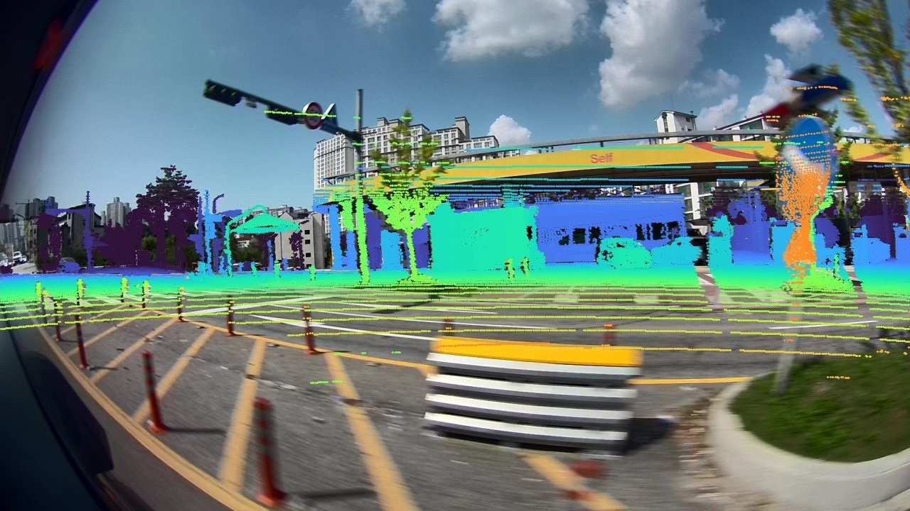
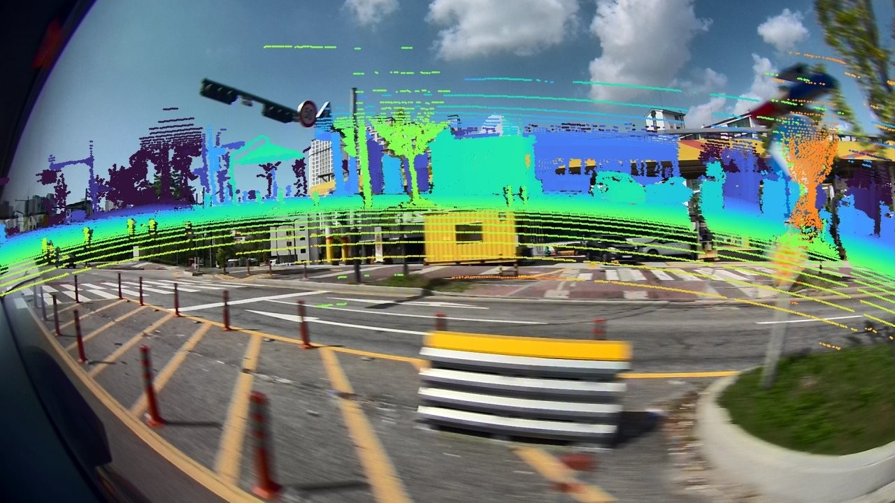
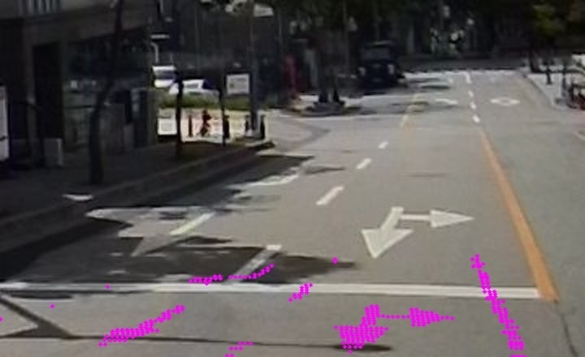
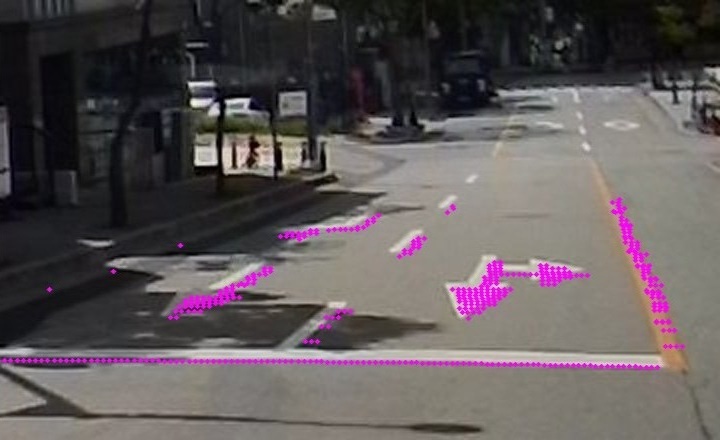

Grand Prize.
4th International University Student
EV Self-Driving Competition
Team ChaChaPing · 1/10th division. Developed lane perception and control for the competition.
From raw signals
to autonomous motion.
I study how machines perceive the world, and build the systems that turn perception into action.
Download CV

RAW vision / Robot learning / Autonomous systems
Explore my work4th International University Student
EV Self-Driving Competition
Team ChaChaPing · 1/10th division. Developed lane perception and control for the competition.
ICCAS F1TENTH
Korea Championship · 폭주(暴走)
Developed adaptive lane/waypoint tracking and IMU/odometry interfaces for the racing stack.
Event information ↗Formula Student Korea
Autonomous category
Simulation, driving algorithm development, and competition preparation.
Explore the stack ↗Good autonomy starts
with understanding the signal.
I'm an Automotive Engineering undergraduate at Hanyang University and a research intern at the Intelligent Robotics and Computer Vision Laboratory, advised by Prof. Soonmin Hwang. My work spans RAW-domain detection research, real-vehicle sensor and data infrastructure, and autonomous racing. I also served as the second president of MiRu, our automotive software club.
I like working across the whole loop: collect the data, understand the failure, build the system, and test what actually changed.
Data Machine · IRCV Lab · Full-stack sensor platform
I build the real-vehicle sensor stack from low-level camera drivers to the operator interface: device configuration, GPU image processing, time synchronization, reliable acquisition and calibration. The UI brings that engineering together in one field workflow.
The 19 September 2026 integration test recorded this setup without observed camera drops. Full all-sensor phase synchronization remains in progress.
Explore the acquisition stackSpinnaker-to-ROS 2 camera nodes, device discovery, visible/thermal camera support, and model-specific capability handling.
Exposure, gain, ROI, pixel format, frame rate and network configuration, with runtime controls and persistent camera settings.
GPIO exposure triggering, PTP/PPS time references, camera timestamp mapping and exposure-time correction across device and host clocks.
CUDA/NPP demosaicing and nvJPEG encoding, concurrent sensor acquisition, manual and event-triggered recording, and frame integrity checks.
Camera intrinsics, extrinsics and rectification, extended by the online camera–LiDAR calibration and nuScenes export tooling below.
One workflow for starting devices, selecting topics, viewing streams, recording events and diagnosing missing, frozen or mistimed data.
Targetless online calibration · ROSbag → nuScenes
I developed a camera–LiDAR calibration pipeline that uses ordinary driving logs to jointly estimate lens distortion, windshield refraction, sensor poses and timing. The resulting sensor models feed directly into the dataset converter.
Seven cameras × two 30-second held-out clips. Median of 14 evaluation-cell medians; cell medians range from 1.57 to 2.36 px. Evaluated on matched LiDAR–image points, not external calibration ground truth.


BEFOREAFTERThe same real road frame, before and after calibration. Magenta points are high-reflectivity LiDAR returns: road paint should align with the image.
Feature-track bundle adjustment with INS poses, rolling-shutter timing, a fisheye lens model and a B-spline windshield field.
LiDAR intensity rendering, LoFTR correspondences and robust PnP provide camera–LiDAR geometric constraints.
Joint optimization combines tracks and LiDAR matches, estimates LiDAR-to-body alignment, then exports calibration for conversion.
F1TENTH E2E · Custom simulator & learning stack
I designed and implemented the simulator itself: vehicle dynamics, LiDAR models, GPU-batched environments and track-building tools. DAgger/PPO policies learn local curvature-and-speed plans, which an iLQR controller tracks.
Policy results are simulation-only. Real-car transfer is not yet validated.
View projectFormula Student Korea / 2026
Responsible for perception and SLAM in the RACE team. Developed and integrated camera–LiDAR cone perception, g2o graph SLAM, sensor simulation, local/global planning, racing lines and control for Formula Student Korea 2026.
RViz recordings from the simulation stack. These are development runs, not competition footage.
Explore the stackRIFT · DriveRAW · ISP-stage research
I develop learned RAW-to-detector frontends and lead controlled experiments across datasets, ISP stages and pretraining regimes. The work includes paired RAW/RGB data acquisition, annotation tools, MMDetection baseline integration, ablations and cross-domain evaluation.
Research manuscripts and experimental systems. Related public tooling includes RAW-assisted auto-labeling.
Multi-camera acquisition & calibration
Tools for FLIR camera streaming, synchronized capture, intrinsic and extrinsic calibration, and RAW/RGB export. Connecting camera hardware and ROS recordings to datasets that perception models can use.
Camera models, capture-time metadata and calibration workflows underpin the larger Data Machine and T-Car systems.
View projectT-Car traffic-light perception
A two-stage pipeline for traffic-light detection and seven-state classification, with data preparation and training workflows.
A normalized confusion matrix from the documented training run. It shows class-level evaluation, not an on-road reliability measurement.
View projectContributed synchronization-aware ROS-to-nuScenes conversion: complete camera-set selection, dropped-frame handling, rectification, LiDAR/radar/INS export and robust batch ingestion.
Integrated YOLO object detection with ROS messages and visualization; investigated camera–LiDAR association, temporal misalignment and false positives alongside the two-stage traffic-light pipeline.
Built and deployed a route-management application for the lab, connecting coordinate-defined routes, navigation, collection runs, GPS sharing and route history. FastAPI with a map-based web interface.
Intelligent Robotics and Computer Vision Laboratory
Advisor: Prof. Soonmin Hwang
Industry-academia scholarship recipient
Leadership alongside hands-on autonomous-driving development.
Double major: Automotive Software · Degree in progress
Implemented speech-to-command interaction using Whisper, local language models and constrained navigation commands, with spoken feedback. Also developed camera-based YOLO lane and object perception within the team rover project.
Explore the code ↗Implemented a CFS-style scheduler with a red-black-tree run queue, clone/join threads sharing an address space, and lazy file-backed mmap/munmap in xv6/RISC-V coursework.
ISP and low-light structure from motion — IRCV Lab seminar, including a discussion of Dark3R.
Current exploration: verified language corrections and data flywheels for bimanual vision-language-action models.